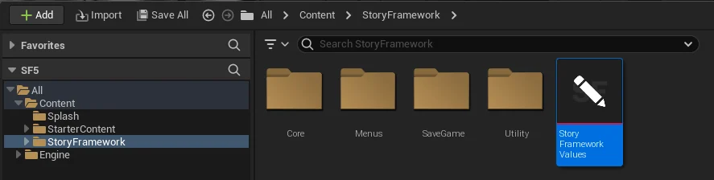

全局设置（SFV）¶
StoryFrameworkValues（简称 SFV）是一个数据资产，集中保存镜头、交互、界面、对话、任务等全局参数。改手感先来这里，不要急着改蓝图。
怎么打开¶
- 在内容浏览器打开
StoryFramework/StoryFrameworkValues。 - 或者用编辑器顶部的 Story Framework → Framework Settings。

内容根目录下的 StoryFrameworkValues 资产里面有什么¶
| 分类 | 常见设置 |
|---|---|
| 摄像机 | 第一/第三人称的视野、距离、偏移、灵敏度 |
| 交互 | 交互距离、提示显示、描边 |
| 界面 | 字幕字号与位置、提示样式 |
| 对话 | 打字速度、回复计时、镜头切换 |
| 物品与任务 | 槽位数量、任务显示方式 |
SFV 挂在游戏实例上，所以切关卡不会丢设置，主菜单阶段也能读到。项目的游戏实例类（Game Instance Class）必须是 SFGameInstance_BP。
修改与验证¶
- 打开 SFV，改一个值，例如把交互距离从 200 改成 260。
- 运行示例地图，站远一点看提示是否还出现。
- 如果没变化，确认改的是正确的分类，并检查是否有蓝图覆盖了这个值。
一次只改一个值
SFV 的字段很多，一次改多项很难判断是哪一项影响了手感。改一项，运行一次。